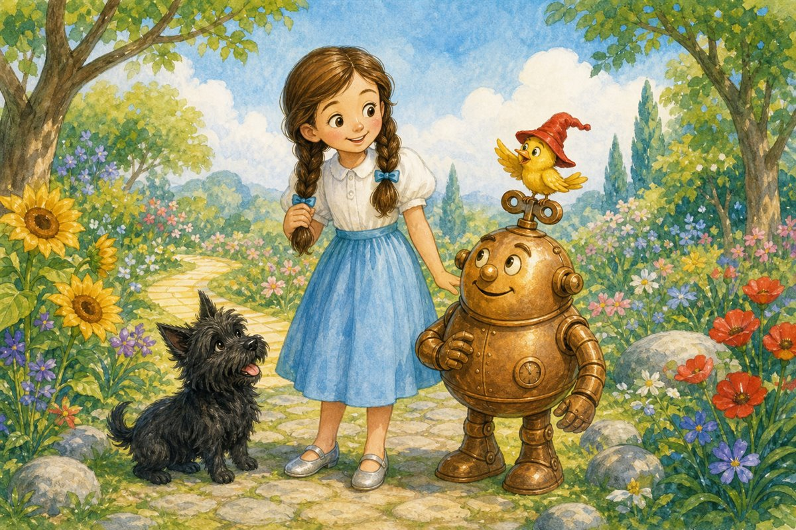
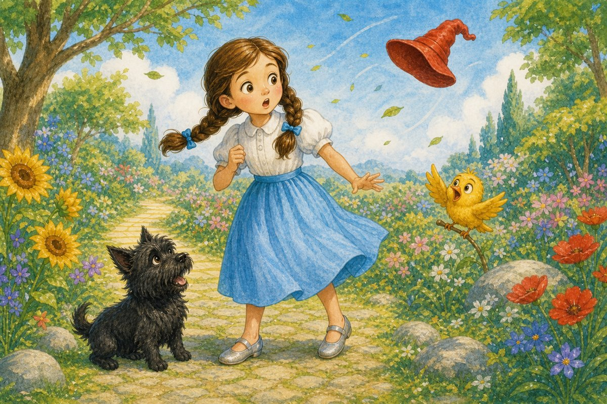
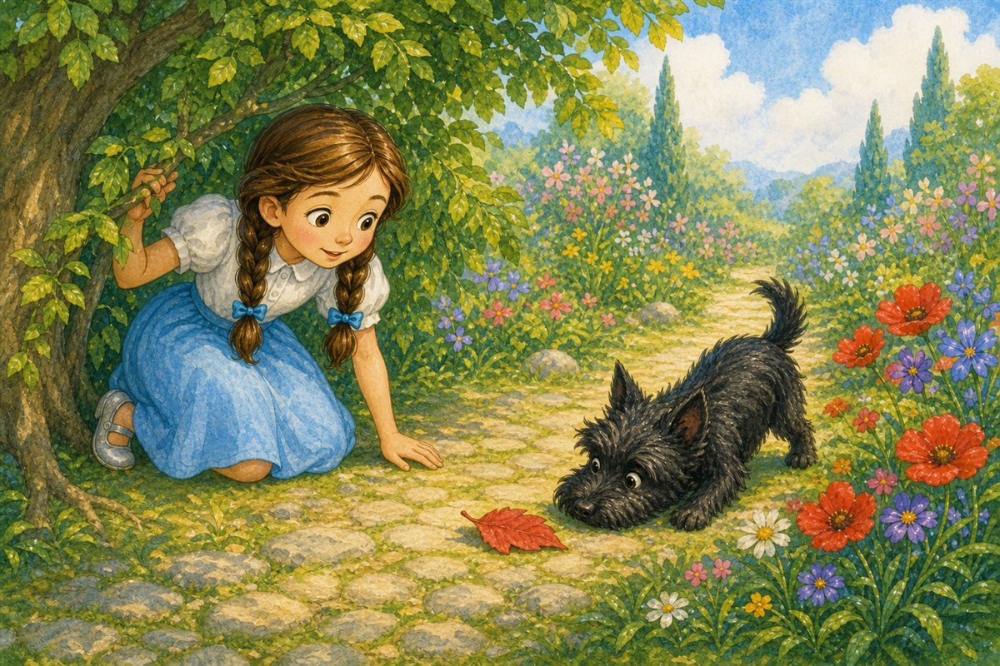
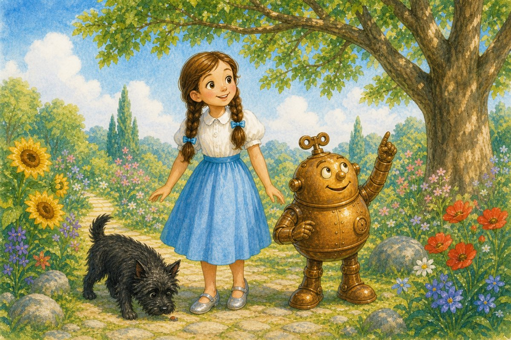
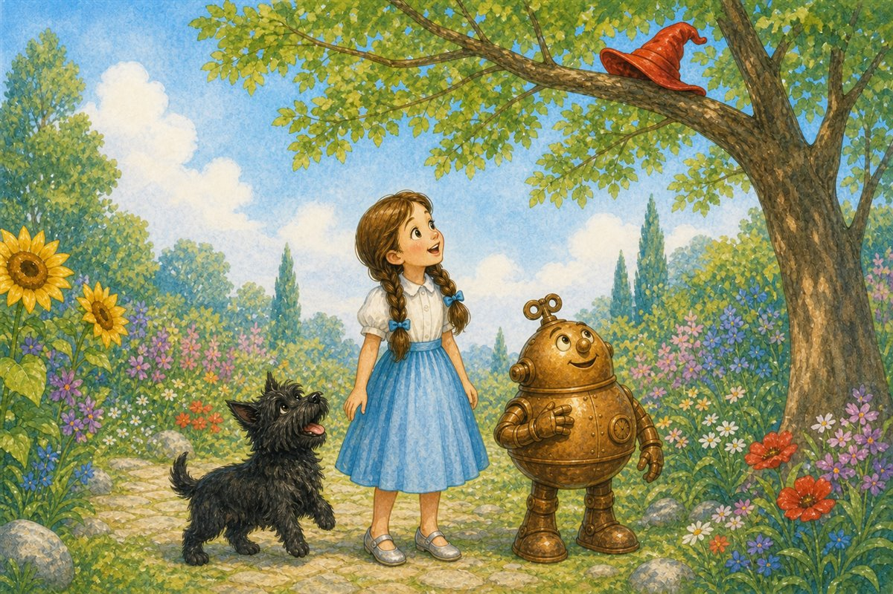
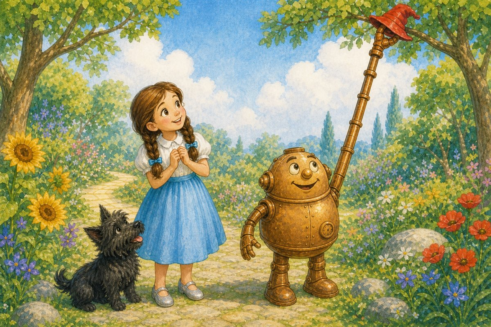
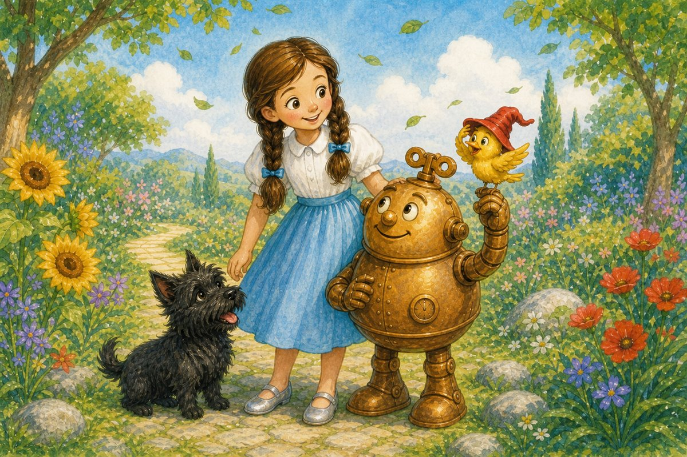

Pahina 1
Nasa hardin si Dorothy.
Kasama niya si Toto.
Maganda ang araw.
Maraming puno at bulaklak sa hardin.
Isang kuwento sa Lupain ng Oz
Basahin nang dahan-dahan. Puwedeng huminto, bumalik, tumingin sa larawan, at basahin muli ang paboritong pahina.

Nasa hardin si Dorothy.
Kasama niya si Toto.
Maganda ang araw.
Maraming puno at bulaklak sa hardin.
May maliit na dilaw na ibon sa isang puno.
Masaya ang ibon.
May pulang sumbrero ang ibon.
“Magandang araw!” sabi ni Dorothy.

Biglang umihip ang hangin.
Lumipad ang pulang sumbrero.
“Wala ang sumbrero ko!” sabi ng ibon.
Malungkot na ang ibon.
“Hahanapin natin ang sumbrero,” sabi ni Dorothy.
Naghanap si Dorothy at si Toto.
Tumingin sila sa ilalim ng puno.
Wala roon ang sumbrero.

Tumingin sila sa tabi ng mga bulaklak.
May pulang bagay doon.
Mabilis na tumakbo si Toto.
Pero pulang dahon lang iyon.
Tumingin sila sa likod ng malaking bato.
Wala roon.
Tumingin sila sa ibabaw ng bato.
Wala rin.
“Nasaan ang sumbrero?” tanong ni Dorothy.

Dumating si Tik-Tok.
“Ano ang hinahanap ninyo?” tanong niya.
“Isang pulang sumbrero,” sabi ni Dorothy.
“Tutulong ako,” sabi ni Tik-Tok.
Tumingin si Dorothy sa harap.
Tumingin si Toto sa baba.
Tumingin si Tik-Tok sa taas.
Wala pa rin ang pulang sumbrero.

Biglang tumahol si Toto.
“Aw! Aw!”
Tumingin silang lahat sa mataas na sanga.
Naroon ang pulang sumbrero!
Masaya si Dorothy.
Masyadong mataas ang sanga.
Hindi maabot ni Dorothy ang sumbrero.
Hindi rin ito maabot ni Toto.
Pero mahaba ang kamay ni Tik-Tok.

Iniunat ni Tik-Tok ang kamay niya.
Kinuha niya ang pulang sumbrero.
Ibinigay niya ang sumbrero sa maliit na ibon.

“Salamat!” sabi ng ibon.
Masaya ang ibon.
Masaya rin ang lahat.
Umihip muli ang hangin.
Hinawakan agad ng ibon ang pulang sumbrero niya.
Tumawa silang lahat.
Pag-usapan natin